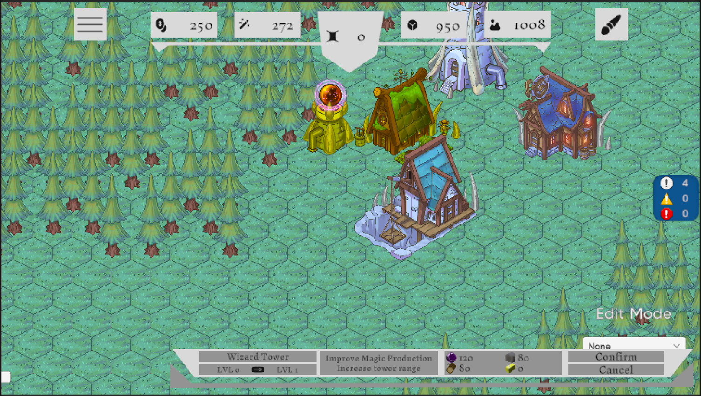
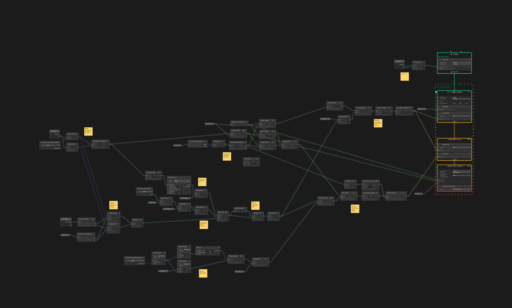
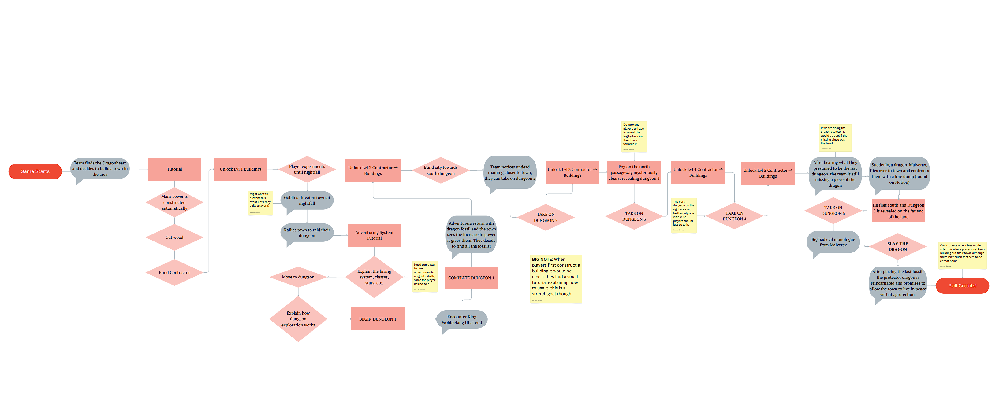

W25 Blog Post #5
A few adjustments needed to be made to the Contractor UI as I had implemented it from last week. For one, there was an issue where the highlighting would be incorrect if going from upgrading other buildings to upgrading the tavern. Secondly, I had just used a plain grey rectangle. I instead had to copy the UI design from the figma directly, which is a convenient feature I didn't realize existed.
I changed the custom tile class to derive its custom properties from a interface ICustomTile that is now used by the building manager and other systems when interacting with these tiles. This allows for multiple different types of tiles to be seamlessly used, including rule tiles.
Other than as a normal work period, some of my time was spent talking about the tile set with a member of the art team. We needed to decide on what tiles they would draw for the new ground tiles in order to optimize time and cover the most common tile cases in the current map. I also spent some time resolving merge conflicts for my recent changes.
For the new dungeon system, a particle effect was wanted for enemies disintegrating after death, similar to Undertale. Originally I didn't know how I'd go about this, but I eventually figured that VFX Graph would be a good way to accomplish this. Having never used VFX Graph before this ended up having a bit of a learning curve. I made the image be displayed as an array of rectngular particles that have their own uv range to dsplay the image appropriatly. Then the image gets dissolved by moving the parts over time.
VFX Graph for image dissolve effect.
The next hurdle for creating this effectwas to get it to be useable within the UI, as it would need to be for the dungeon system. The solution I ended up with was using a secondary camera to render the Image dissolving in its own seperate layer, then displaying a render texture from this camera in a RawImage UI element. I made an API to effectively use this method to make its use easier to other programmers.
I spent a while creating a tutorial/introduction at the start of the game which is used to demonstrate the basics of building, deleting, and the purpose of the contractor. Creating this required learning how to use the dialogue system implemented by Connor Spears. In order to achieve the button highlighting, I use a sort of proxy button which copies the screen position of another button and invokes the real button's oClick when pressed. This allows the other UI to be effectively disabled except for the highlighted button.
Overall game flowchart.
Intro Tutorial video.